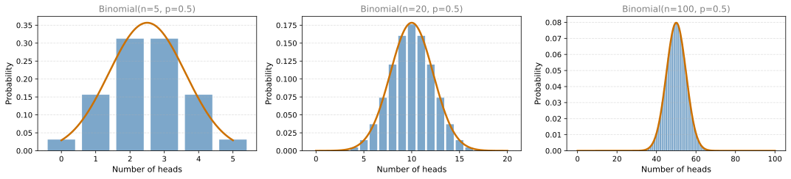
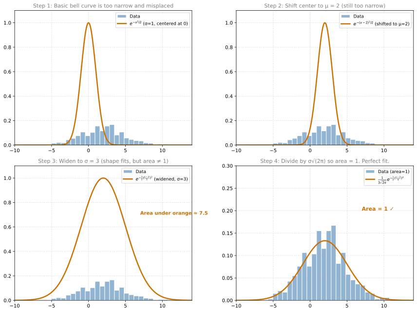
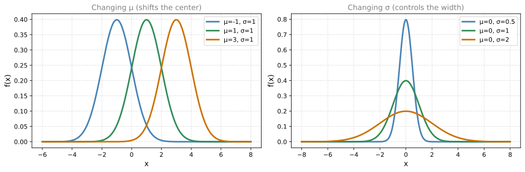
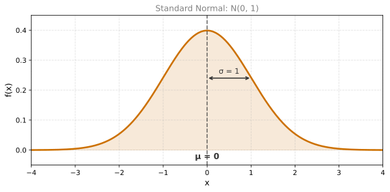
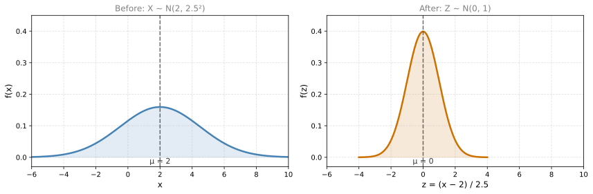
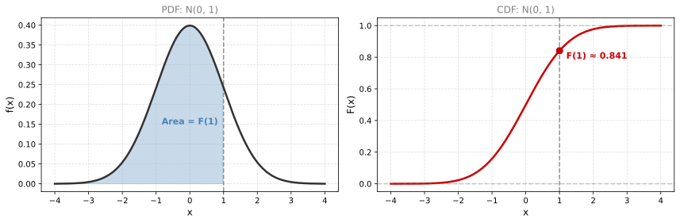

Normal Distribution
probability
The normal distribution (also called the Gaussian distribution, after Carl Friedrich Gauss) is one of the most important distributions in all of…
From Binomial to Bell Curve
The normal distribution (also called the Gaussian distribution, after Carl Friedrich Gauss) is one of the most important distributions in all of statistics and machine learning.
To build intuition, recall the binomial distribution. It counts the number of heads in \(n\) coin tosses. Let us see what happens as \(n\) gets larger and larger:
As \(n\) increases, the binomial PMF looks more and more like a smooth bell curve. The orange curve overlaid on each plot is the normal distribution. When \(n\) is large, the binomial can be approximated by a normal distribution very well.
Building the Formula
Let us build the normal distribution formula step by step, the way the lecture does it. Imagine you have some bell-shaped data centered at \(\mu = 2\) with spread \(\sigma = 3\). We want to find a mathematical curve that fits it.
Step 1: Start with a basic bell shape
The function \(e^{-x^2/2}\) produces a bell curve centered at 0 with standard deviation 1:

Here is what each step does:
Step 1: \(e^{-x^2/2}\) is a bell curve, but it is centered at 0 and very narrow compared to the data.
Step 2: Replace \(x\) with \((x - 2)\) to shift the center to \(\mu = 2\). Now the curve and data are centered at the same place, but the curve is still too skinny.
Step 3: Divide the inside by \(\sigma = 3\) to widen the curve: \(e^{-\frac{1}{2}\left(\frac{x-2}{3}\right)^2}\). Now the shape matches the data, but the area under the orange curve is about \(3\sqrt{2\pi} \approx 7.5\), not 1.
Step 4: Divide the whole thing by \(3\sqrt{2\pi}\) to bring the area down to 1. Now both the data histogram and the curve have area 1, and the fit is excellent.
The final formula with general parameters \(\mu\) and \(\sigma\):
\[ f(x) = \frac{1}{\sigma\sqrt{2\pi}} \, e^{-\frac{1}{2}\left(\frac{x - \mu}{\sigma}\right)^2} \]
- \(\mu\) is where the data is centered (the mean)
- \(\sigma\) is how wide the data is spread (the standard deviation)
- \(\frac{1}{\sigma\sqrt{2\pi}}\) is a scaling constant that makes the area equal to 1
Parameters: \(\mu\) and \(\sigma\)
The normal distribution has two parameters:
- \(\mu\) (mu) = the mean (center of the bell)
- \(\sigma\) (sigma) = the standard deviation (spread/width of the bell)

Key properties:
- The curve is symmetric around \(\mu\)
- The range is all real numbers (\(-\infty\) to \(+\infty\)). The PDF is always positive, although it becomes extremely small far from \(\mu\).
- The total area under the curve is always 1
Notation
We write:
\[ X \sim N(\mu, \sigma^2) \]
where \(N\) stands for “Normal.” Note that the second parameter in the notation is \(\sigma^2\) (variance), not \(\sigma\) (standard deviation). Both carry the same information since \(\sigma > 0\).
Standard Normal Distribution
A particularly important case is \(\mu = 0\) and \(\sigma = 1\). This is called the standard normal distribution:
\[ X \sim N(0, 1) \]
Its PDF simplifies to:
\[ f(x) = \frac{1}{\sqrt{2\pi}} \, e^{-x^2/2} \]
The bell is centered at 0 and has a standard width of 1.

Standardization
There is a really easy way to convert any normal distribution into the standard one. If \(X \sim N(\mu, \sigma^2)\), define:
\[ Z = \frac{X - \mu}{\sigma} \]
Then \(Z \sim N(0, 1)\).
Example: If \(X \sim N(2, 2.5^2)\):
\[ Z = \frac{X - 2}{2.5} \]
This subtracts the mean (shifts to center 0) and divides by the standard deviation (scales to width 1).

Standardization is useful because it allows us to compare variables that have different scales. If one variable ranges from 0 to 1000 and another from 0 to 1, standardizing both puts them on the same footing.
CDF of the Normal Distribution
The CDF \(F(x) = P(X \leq x)\) of the normal distribution looks like an S-shaped curve (sigmoid):

Unlike the uniform CDF (a straight line), the normal CDF is an S-shaped curve. It rises steeply near \(\mu\) (where the density is highest) and flattens out in the tails.
The area under the normal PDF cannot be computed with a simple formula (it requires calculus or numerical methods). In practice, we use software or tables to look up these values.
Real-World Applications
Many things in nature follow a normal distribution:
- Height and weight of people
- IQ scores
- Measurement errors
- Noise in communication channels
In general, variables that result from the sum of many independent small effects tend to follow normal distributions. Many machine learning models also assume that data follows a normal distribution. Understanding this distribution well is essential.
Review Questions
1. What are the two parameters of the normal distribution and what do they control?
TipAnswer
\(\mu\) (mu) is the mean, which controls where the bell curve is centered. \(\sigma\) (sigma) is the standard deviation, which controls how wide or narrow the bell is. A larger \(\sigma\) means more spread out, a smaller \(\sigma\) means more concentrated.
1. What is the standard normal distribution?
TipAnswer
The standard normal distribution is a normal distribution with \(\mu = 0\) and \(\sigma = 1\), written as \(N(0, 1)\). Its PDF is \(f(x) = \frac{1}{\sqrt{2\pi}} e^{-x^2/2}\).
1. How do you standardize a variable \(X \sim N(5, 3^2)\)?
TipAnswer
\(Z = \frac{X - 5}{3}\). This shifts the distribution to center 0 and scales it to have standard deviation 1. The result \(Z \sim N(0, 1)\).
1. Why does the binomial distribution look like a normal distribution when \(n\) is large?
TipAnswer
When \(n\) is large, the binomial distribution (counting heads in many coin flips) produces a histogram with many bars that approximates a smooth bell curve. This is a consequence of the Central Limit Theorem, which states that sums of many independent random events tend toward a normal distribution.
1. Can the PDF of a normal distribution be negative? Can it be greater than 1?
TipAnswer
The PDF is always non-negative (the exponential function is always positive). It can be greater than 1 at certain points (for example, when \(\sigma\) is very small, the peak can exceed 1), because the PDF gives density, not probability. The total area under the curve is always exactly 1.
1. You are tasked with modeling the heights of individuals in a diverse country. Which probability distribution would be most suitable for capturing the patterns in the heights of the population?
- Binomial Distribution
- Normal Distribution
- Uniform Distribution
TipAnswer
b. Normal Distribution. Heights in a population cluster around an average value with symmetric spread on both sides, forming the classic bell-curve shape. The binomial is for counting discrete successes, and the uniform assumes all values are equally likely, which does not match how heights are distributed.
1. Consider four normal distributions: normal_A (blue, tall narrow peak at \(x \approx -2.5\)), normal_B (orange, medium peak at \(x \approx 0\)), normal_C (green, wider shorter peak at \(x \approx 0\)), and normal_D (red, widest shortest peak at \(x \approx 2.5\)). Select all true statements.
- \(\sigma_{\text{C}} > \sigma_{\text{B}}\)
- \(\sigma_{\text{A}} > \sigma_{\text{B}}\)
- \(\sigma_{\text{D}} > \sigma_{\text{A}}\)
- \(\mu_{\text{A}} > \mu_{\text{B}}\)
- \(\mu_{\text{D}} > \mu_{\text{C}}\)
TipAnswer
The true statements are a, c, and e.
- (a) True: C is wider (shorter peak) than B, so \(\sigma_C > \sigma_B\).
- (b) False: A is the tallest and narrowest curve, so it has the smallest \(\sigma\). \(\sigma_A < \sigma_B\).
- (c) True: D is the widest (shortest peak) and A is the narrowest, so \(\sigma_D > \sigma_A\).
- (d) False: A is centered at about \(-2.5\) and B at about \(0\), so \(\mu_A < \mu_B\).
- (e) True: D is centered at about \(2.5\) and C at about \(0\), so \(\mu_D > \mu_C\).
Remember: a taller, narrower peak means smaller \(\sigma\), and the center of the bell tells you \(\mu\).